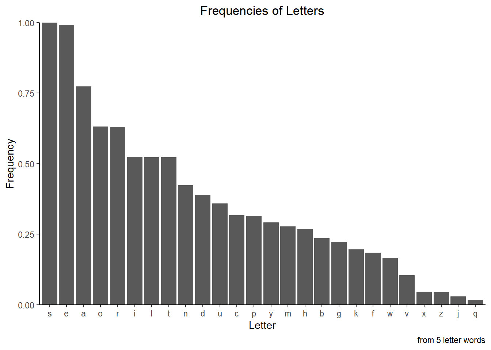
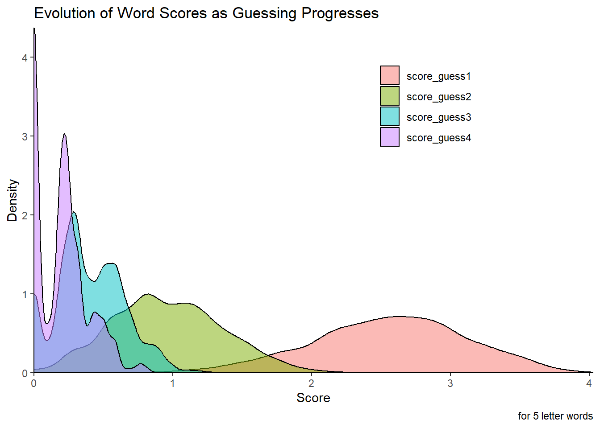
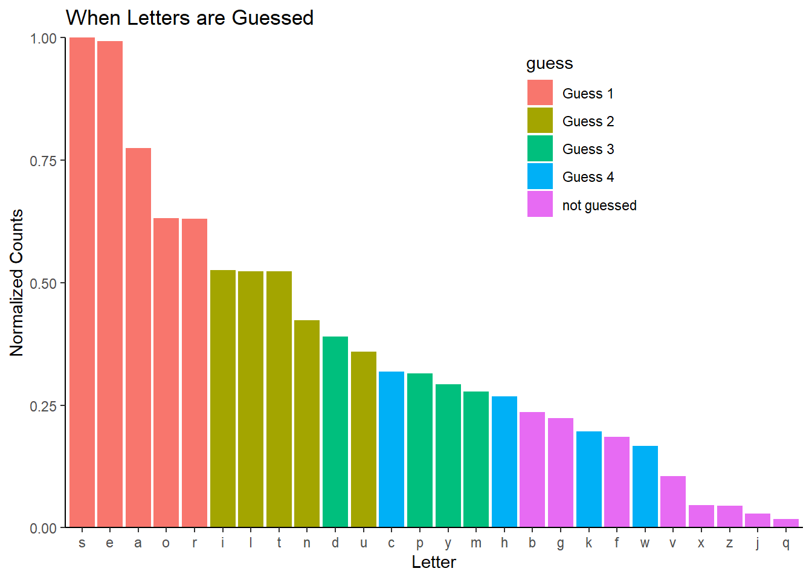

#|label: helper-functions
Construct_Freq_Table <- function(word_list) {
#scoring code uses the counting code from
#https://www.r-bloggers.com/2018/12/rrrrs-in-r-letter-frequency-in-r-package-names/
# making the frequency table ----
letters <- unlist(strsplit(word_list[,1], split = ""))
char_frequencies <- as.data.frame(table(letters))
#normalized
common <- max(char_frequencies[,2])
y=(char_frequencies[,2]/common)
char_frequencies$normalized <- y
return(char_frequencies)
}
Scoring_Word <- function(word, freqs = char_frequencies, verbose = FALSE, debug_detail = FALSE){
letter_vec <- unlist(strsplit(word, split = ""))
if (verbose == TRUE)
{message("I'm in Scoring_words message and scoring: ", word)}
value <- 0
for (i in 1:length(letter_vec)) {
position <- letter_vec[i]== freqs$letters
value[i] <- freqs$normalized[position]
if (debug_detail == TRUE)
{
print("I am in the scoring loop calculating value: ")
print(i)
print(sum(value))
}
if (i == length(letter_vec)) {
return(total <- sum(value))
}
}
}
Scoring_Word_Unique <- function(word, freqs = char_frequencies, verbose = FALSE, debug_detail = FALSE){
# This does only score on unique letters
letter_vec <- unlist(strsplit(word, split = ""))
unique_letter_vec <- unique(letter_vec)
#unique_letter_vec <- letter_vec
if (verbose == TRUE)
{message("I'm in Scoring_words_Unique and scoring: ", word)}
value <- 0
if (length(unique_letter_vec)== 0) {
return(value)
} else{
for (i in 1:length(unique_letter_vec)) {
position <- unique_letter_vec[i] == freqs$letters
value[i] <- freqs$normalized[position]
if (debug_detail == TRUE)
{
print("I am in the unique scoring loop calculating value: ")
print(i)
print(sum(value))
}
if (i==length(unique_letter_vec)) {
return(total <- sum(value))
}
}
}
}
Removing_Letters <- function (word, chosen_word, verbose = TRUE, debug_detail = TRUE) {
lvec <- gsub(paste0("[", chosen_word, "]"), "", word)
return(lvec)}Self-Guided Learning through a Wordle Guess Generator: Part 2
R
R-code
Current version of a Wordle Guess Generator
# Loading libraries and data ----
library("tidyverse")── Attaching core tidyverse packages ──────────────────────── tidyverse 2.0.0 ──
✔ dplyr 1.1.1 ✔ readr 2.1.4
✔ forcats 1.0.0 ✔ stringr 1.5.0
✔ ggplot2 3.4.1 ✔ tibble 3.2.1
✔ lubridate 1.9.2 ✔ tidyr 1.3.0
✔ purrr 1.0.1
── Conflicts ────────────────────────────────────────── tidyverse_conflicts() ──
✖ dplyr::filter() masks stats::filter()
✖ dplyr::lag() masks stats::lag()
ℹ Use the conflicted package (<http://conflicted.r-lib.org/>) to force all conflicts to become errorslibrary("assertive")
Attaching package: 'assertive'
The following objects are masked from 'package:purrr':
is_atomic, is_character, is_double, is_empty, is_formula,
is_function, is_integer, is_list, is_logical, is_null, is_vector
The following object is masked from 'package:tibble':
has_rownames#from https://www-cs-faculty.stanford.edu/~knuth/sgb-words.txt
word_list <- read.table("C:/Users/drsin/OneDrive/Documents/R Projects/Word-Games/input/sgb-words.txt")
# Functions ----
#source("code/helper-functions.R")
# calculate letter frequencies from word list
char_frequencies <- Construct_Freq_Table(word_list)
# Initialize the word_scores dataframe ----
num_words <- nrow(word_list)
#num_words <- 5
word_scores <- data.frame(word_name = word_list[1:num_words,1],
word_length = rep(0, times = num_words),
word_guess1 = rep(0, times = num_words),
word_guess2 = rep(0, times = num_words),
word_guess3 = rep(0, times = num_words),
word_guess4 = rep(0, times = num_words),
score = rep(0, times = num_words),
score_guess1 = rep(0, times = num_words),
score_guess2 = rep(0, times = num_words),
score_guess3 = rep(0, times = num_words),
score_guess4 = rep(0, times = num_words)
)
#fill in word lengths. This is so code can be expended to longer words
word_scores$word_length <- str_length(word_scores$word_name)
# Calculates the initial scores for all words -----
word_scores <- word_scores %>%
mutate(score = map_dbl(word_name, Scoring_Word))
word_scores <- word_scores %>%
mutate(score_guess1 = map_dbl(word_name, Scoring_Word_Unique))
# Finding the best first word
top_words <- word_scores %>%
arrange(desc(score_guess1))
word_1 <- top_words$word_name[1]
# Scoring for second guess
word_scores <- word_scores %>%
mutate(word_guess2 =
map_chr(word_name, Removing_Letters, chosen_word = word_1))
word_scores <- word_scores %>%
mutate(score_guess2 = map_dbl(word_guess2, Scoring_Word_Unique))
top_words <- word_scores %>%
arrange(desc(score_guess2))
word_2 <- top_words$word_name[1]
# Scoring for third guess
word_scores <- word_scores %>%
mutate(word_guess3 =
map_chr(word_guess2, Removing_Letters, chosen_word = word_2))
word_scores <- word_scores %>%
mutate(score_guess3 = map_dbl(word_guess3, Scoring_Word_Unique))
top_words <- word_scores %>%
arrange(desc(score_guess3))
word_3 <- top_words$word_name[1]
# Scoring for fourth guess
word_scores <- word_scores %>%
mutate(word_guess4 =
map_chr(word_guess3, Removing_Letters, chosen_word = word_3))
word_scores <- word_scores %>%
mutate(score_guess4 = map_dbl(word_guess4, Scoring_Word_Unique))
top_words <- word_scores %>%
arrange(desc(score_guess4))
word_4 <- top_words$word_name[1]
# subsetting this dataframe and reshaping it.
# This is used to make a histogram later.
word_scores2 <- word_scores %>%
select(word_name, score_guess1, score_guess2, score_guess3, score_guess4)
word_scores_reshaped <-
pivot_longer(word_scores2, cols = 2:5,
names_to = "score_type", values_to = "score")
### This is now just visualizing what we've done. ------
#plotting the frequency of the letters in our word_set
ggplot(char_frequencies,
aes(x = fct_rev(fct_reorder(letters, normalized)), y = normalized )) +
geom_col() +
theme_classic() +
theme(legend.position = "none") +
labs(title = "Frequencies of Letters", caption = "from 5 letter words") +
theme(plot.title = element_text(hjust = 0.5)) +
xlab("Letter") +
ylab("Frequency") +
scale_y_continuous(expand = c(0, 0))
## This looks at the distribution of scores as guessing occurs. Initially, you have a
word_scores_reshaped$score_type <- as.factor(word_scores_reshaped$score_type)
ggplot(word_scores_reshaped, aes(score, fill = score_type)) +
geom_density(alpha = 0.5) +
theme_classic() +
labs(title = "Evolution of Word Scores as Guessing Progresses",
caption = "for 5 letter words") +
xlab("Score") +
ylab("Density") +
labs(fill = "") +
theme(legend.position = c(0.7, 0.8)) +
scale_x_continuous( expand = c(0, 0)) +
scale_y_continuous( expand = c(0, 0)) 
## Now we are visualizing what letters are picked in each guess
guess <- rep("not guessed", times = 26)
char_frequencies <- cbind(char_frequencies, guess)
# this is done in reverse order because some letters are guessed in more than
# one word and I'd like them marked at the earliest guess.
letter_vec <- unlist(strsplit(word_4, split = ""))
print(letter_vec)[1] "w" "h" "a" "c" "k"for (i in 1:length(letter_vec)) {
position <- letter_vec[i] == char_frequencies$letters
char_frequencies$guess[position] <- "Guess 4"
}
letter_vec <- unlist(strsplit(word_3, split = ""))
print(letter_vec)[1] "d" "u" "m" "p" "y"for (i in 1:length(letter_vec)) {
position <- letter_vec[i] == char_frequencies$letters
char_frequencies$guess[position] <- "Guess 3"
}
letter_vec <- unlist(strsplit(word_2, split = ""))
print(letter_vec)[1] "u" "n" "t" "i" "l"for (i in 1:length(letter_vec)) {
position <- letter_vec[i] == char_frequencies$letters
char_frequencies$guess[position] <- "Guess 2"
}
letter_vec <- unlist(strsplit(word_1, split = ""))
print(letter_vec)[1] "a" "r" "o" "s" "e"for (i in 1:length(letter_vec)) {
position <- letter_vec[i] == char_frequencies$letters
char_frequencies$guess[position] <- "Guess 1"
}
ggplot(char_frequencies, aes(
x = fct_rev(fct_reorder(letters, normalized)),
y = normalized,
fill = guess)) +
geom_col() +
ggtitle("When Letters are Guessed") +
ylab("Normalized Counts") +
xlab("Letter") +
theme_classic() +
theme(legend.position = c(0.7, 0.8)) +
scale_y_continuous(expand = c(0, 0))
ggsave("thumbnail.png")Saving 7 x 5 in imageCitation
BibTeX citation:
@online{e.sinks2023,
author = {Louise E. Sinks},
title = {Self-Guided {Learning} Through a {Wordle} {Guess}
{Generator:} {Part} 2},
date = {2023-04-01},
url = {https://lsinks.github.io/posts/2023-04-01-self-guided-learning-wordle-guesser-part-2},
langid = {en}
}
For attribution, please cite this work as:
Louise E. Sinks. 2023. “Self-Guided Learning Through a Wordle
Guess Generator: Part 2.” April 1, 2023. https://lsinks.github.io/posts/2023-04-01-self-guided-learning-wordle-guesser-part-2.